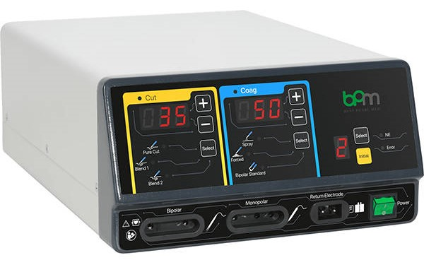

Metode Sunat Techno Sealer yang Modern dan Aman
Jika menginginkan metode sunat yang bisa digunakan untuk bayi sampai dewasa maka Techno Sealer adalah jawabannya. Metode sunat Techno Sealer menggunakan alat yang terdiri dari komponen tabung plastic, ring klem dan pengunci. Alat ini memiliki keunggulan cepat, aman dan nyaman. Sunat menggunakan Techno Sealer dari Klinik Sunat Panda Jember dijamin minim risiko infeksi, minim cidera, tidak perlu dijahit, serta hasil lebih baik dan simetris. Sumber
Proses sunat Techno sealer hanya memakan waktu 7 sampai 10 menit saja, kemudian setelah 5 hari alat ini dapat dilepas. Karena metode ini lebih modern, maka hanya memakan waktu lebih singkat dari pada metode konvensional yang penyembuhannya bisa 14 hingga 21 hari. Sumber Metode techno sealer juga aman digunakan untuk pasien dengan hemofilia, penderita diabetes, anak hiperaktif maupun autis. Pasien dapat berkonsultasi dan kontrol ke Klinik Sunat Panda dan akan ditangani dengan layanan yang prima dan ramah.
Klinik Sunat Panda telah berpengalaman menggunakan metode sunat techno sealer bahkan untuk acara sunat massal dan charity event di berbagai daerah. Kesuksesan event dan kerjasama sunat atau khitan masal ini tak lepas dari keunggulan metode techno sealer yang diberikan. Anak – anak hingga dewasa dapat langsung menikmati aktivitas seperti biasa setelah dilakukan sunat, tanpa harus merasakan rasa sakit jarum suntik maupun pendarahan yang berlebihan. Pasien bisa langsung pulang tanpa rasa khawatir. Supaya lebih yakin lagi untuk pergi sunat ke klinik, maka bisa dibaca cerita bunda yang satu ini ketika membawa anaknya sunat dengan teknik sealer.
Keunggulan dari metode techno sealer adalah:
Untuk dapat berkonsultasi lebih lanjut mengenai layanan sunat dengan metode Techno Sealer silahkan hubungi Klinik Sunat Panda